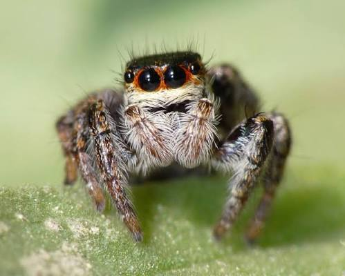

Le Loir-et-Cher possède une faune sauvage d'une richesse incroyable. Grâce à la diversité de ses milieux naturels, des milliers d'espèces d'insectes, de mammifères, d'oiseaux, de reptiles et de poissons cohabitent sur notre territoire. Choisissez une catégorie ci-dessous pour explorer l'atlas complet des animaux de notre département.

De la majestueuse forêt de Sologne aux îles de la Loire sauvage, chaque espace offre un refuge unique. Les grands massifs forestiers abritent les grands cervidés et les sangliers, tandis que le fleuve et les étangs accueillent le discret castor d'Europe et une multitude d'oiseaux migrateurs. Dans les airs, les landes et les prairies, des milliers d'espèces d'insectes, des papillons colorés aux libellules des zones humides, forment le maillon invisible mais capital de notre écosystème.